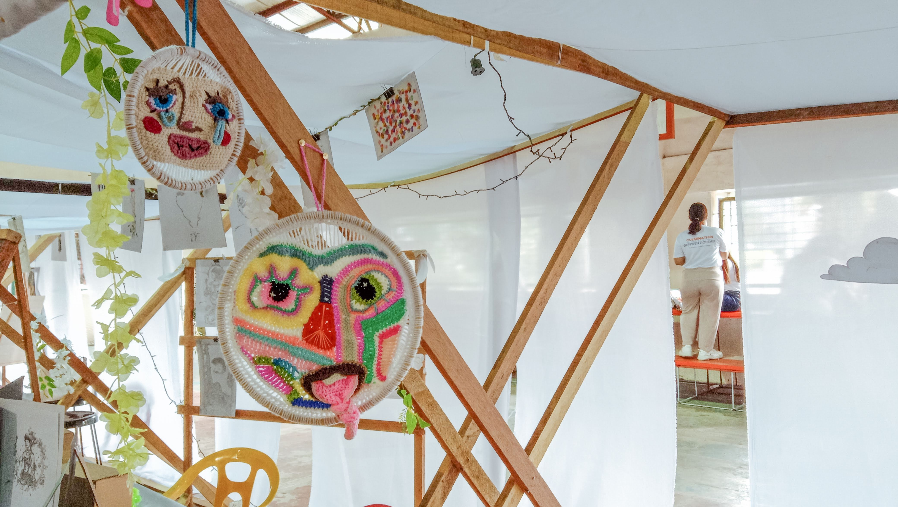
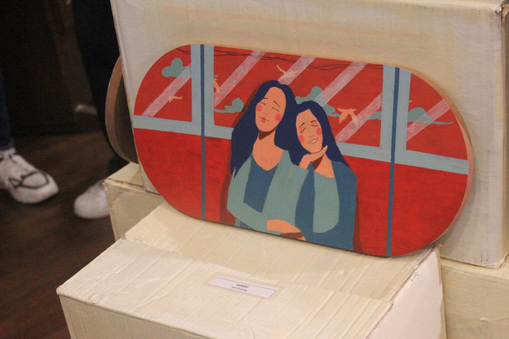
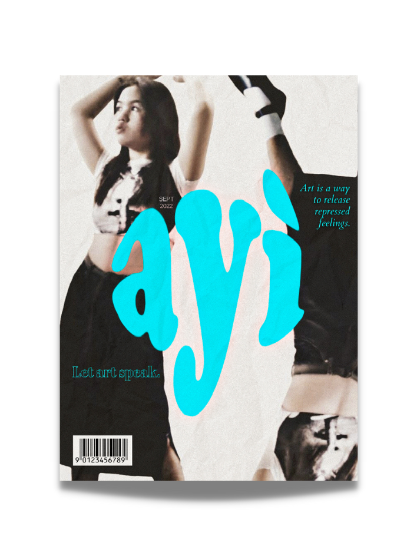
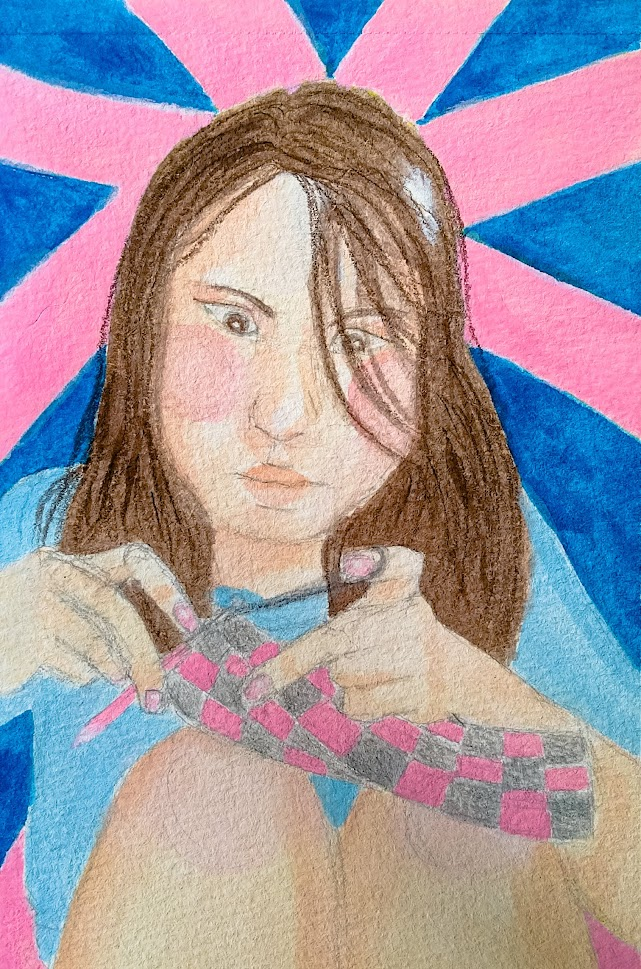
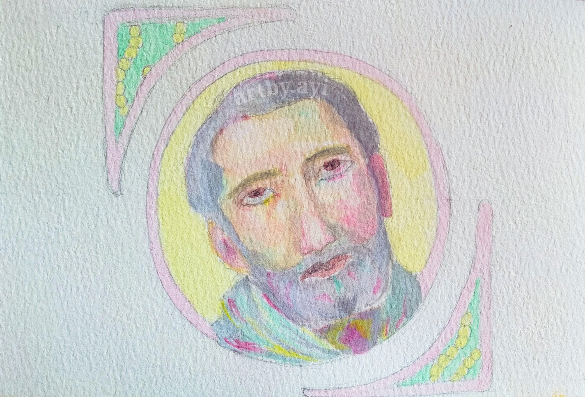
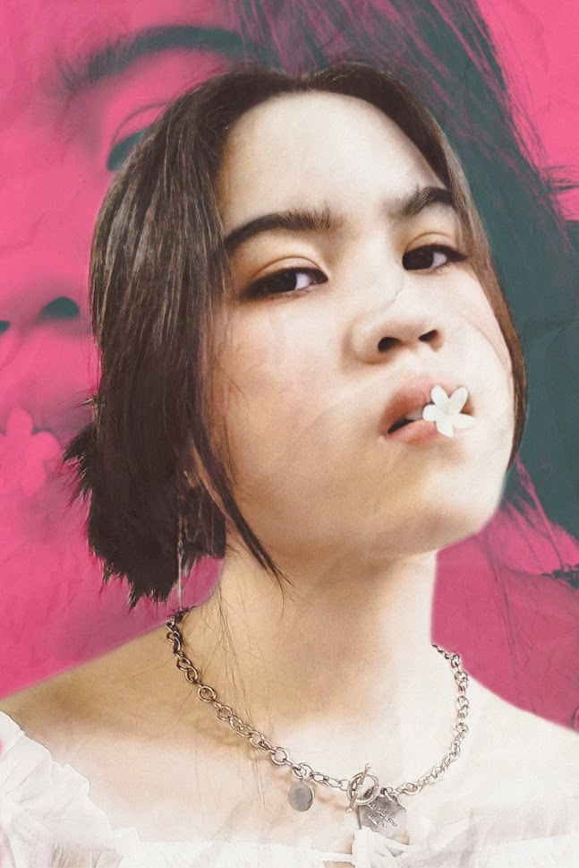

EDUCATION
I took the strand, Arts and Design during Senior Highschool at University of Perpetual Help System-Laguna. This is where I encountered significant
art-inclined subjects such as Elements and Principles of Art, Performing Arts Production, and Apprenticeship and Exploration of Different Art Fields.
For college, I took the course Bachelor of Multimedia Arts (BMMA) at STI College Santa Rosa where I tackled subjects such as Introduction to Multimedia Arts, Digital Photography, and Typography and Layout. These courses provide me with a solid understanding of creative principles and industry workflows, granting
me early familiarity with the field I aim to enter after graduating. They shape my artistic foundation and equip me with the skills, insights, and discipline that will
guide me toward a successful career in the creative industry.






×